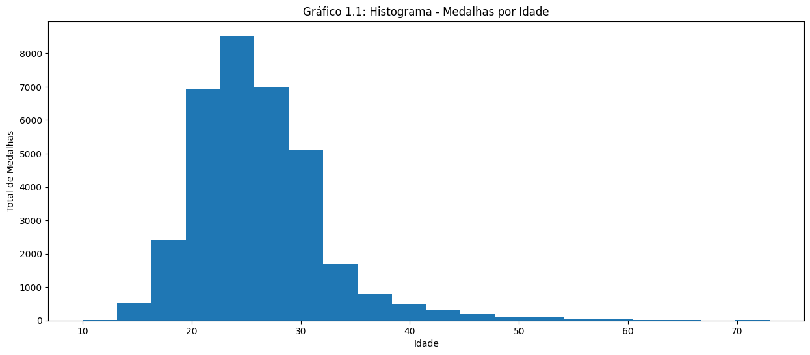
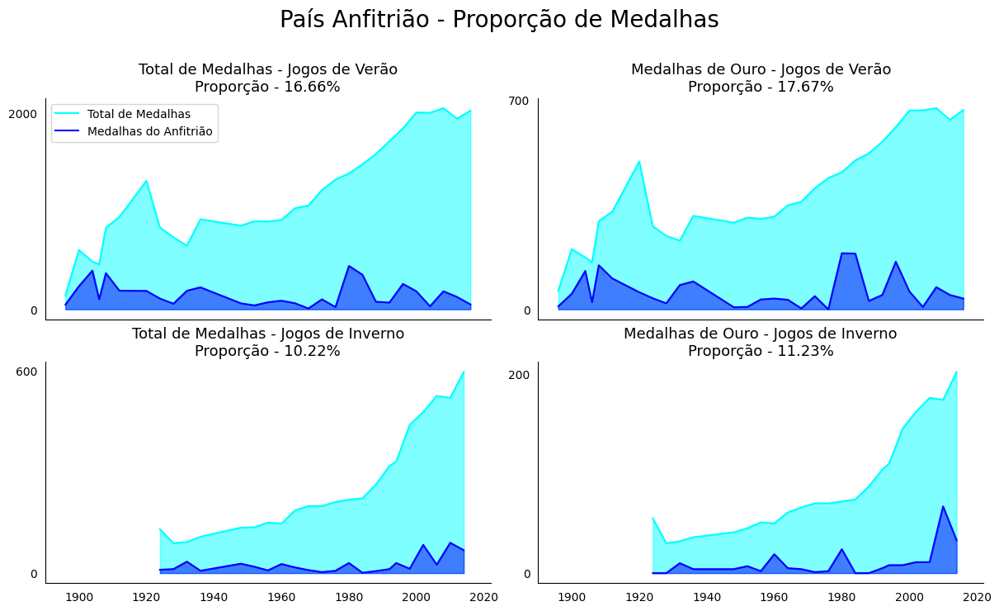

Análises a partir de 120 anos de história dos jogos olímpicos

Os dados utilizados para gerar as visualizações foram encontrados no kaggle, em uma base entitulada 120 years of Olympic history: athletes and result. Essa é uma base que possui duas tabelas, em que somente a que contém os dados dos atletas e eventos foi utilizada. Com isso, as perguntas que nortearam a as visualizações foram:
- Qual é a relação da idade dos atletas com a quantidade de medalhas que ganham e com os esportes que participam?
- Como é a distribuição de idade por esporte entre os medalhistas?
- Existe um padrão específico entre altura/peso dos atletas para a maioria das modalidades?
- Ser anfitrião dos Jogos (Inverno e Verão) faz com que o país ganhe mais medalhas?
Qual é a relação da idade dos atletas com a quantidade de medalhas que ganham e com os esportes que participam?
Existe uma idade em que se ganha mais medalhas?
Inicialmente, foi plotado o histograma, com o objetivo de ter uma visão mais geral. A partir dele é possível perceber que os atletas ganham mais medalhas aproximadamente aos 23 anos. Já o grafico de barras abaixo permite uma análise mais detalhada. Por ser interativo, permite visualizar, de forma organizada, quantas medalhas especificamente foram conquistadas para cada idade. Além disso, a diferença entre as cores das barras e a anotação feita permitem perceber com maior facilidade a faixa etária em que se ganha mais medalhas.
Como é a distribuição de idade por esporte entre os medalhistas?
A fim de visualizar a distribuição de idade por esporte entre os medalhistas, a visualizacao escolhida inicialmente foi o boxplot, que permite, por exemplo a percepção dos outliers e, por ser interativo, permite a análise para cada esporte em relação aos quartis, mediana e valor máximo, valor mínimo. Além disso, também permite a comparação entre os esportes. Assim, é possível perceber, por exemplo, que croquet possui uma variabilidade bem maior que os demais esportes e que os atletas de ginástica ritmica são bem mais jovens que os dos demais esportes.
Entretanto, é preciso de um pouco mais de atenção para obter tais conclusões a partir do boxplot. A fim de analisar com mais facilidade e precisão, foram plotados o gráfico de interativo interquartil por esporte e o gráfico de média de idade por esporte.
Quais países receberam medalhas em cada ano e quantas cada um recebeu?
A ideia por trás dessa pergunta é entender os desempenhos de cada país ao longo do tempo.
Esse gráfico de barras foca em mostrar a concentração total de medalhas entre os países. Ela os ordena pelos quais já ganharam mais medalhas. Ela permite ver bem quais países já ganharam mais medalhas ao longo do tempo. Por exemplo, temos uma disparidade muito grande do Estados Unidos dos outros países, sendo que ele dominou o ganho de medalhas quase todos os anos no qual ele participou dos jogos. Contudo fica de dificil a interpretação em relação a quais foram os tipos de medalhas ganhos e quais anos houveram ganhos maiores, além de que a comparação entre anos fica coplexa de ser feito
Esse mapa de calor deixa de fácil visualização entre os anos e o ganho de medalhas por ano entre os países. Além disso, a adição de um filtro por medalhas também ajuda na ideia de entender melhor o desempenho de cada um dos países. Ao analisar a separação entre os tipos de medalha: ouro, prata e bronze, e os ganhos totais, não vemos mudanças significativas, o que da a entender que os países que mais ganham medalhas tendem a dominar os jogos como um todo. Mas, o filtro do tipo de medalha permite uma compreensão de quais medalhas contribuem mais para os número total de um país, o que também explica as pequenas mudanças.
Existe um padrão específico entre altura/peso dos atletas para a maioria das modalidades?
A fim de responder essa pergunta, foi feito, inicialmente, o gráfico de dispersão plotado a seguir. Nesse gráfico, temos o peso no eixo x e a altura no eixo y e cada cor indica um esporte. Vale ressaltar que cada esporte pode ser selecionado, a fim de ser visualizado individualmente.
A partir desse plot, é possível observar que há mais uma correlação positiva entre as variáveis de peso e altura do que um padrão entre nos esportes em si. Apesar disso, há algumas características interessantes que podem ser notadas, como o fato de que os atletas de Basketball serem mais altos e que tem alguns esportes, Synchronized Swimming por exemplo, em que os atletas tendem a ter pesos mais parecidos.
A seguir temos uma tabela com um resumo quantitativo sobre os dados de altura e peso para cada esporte, com a média (M) e o desvio padrão (STD). Com isso, é possível ver que o esporte com menor altura média é o Gymnastics e o com maior, é o Basketball, o que poderia ser esperado. Tratando-se do peso, nós temos que a modalidade Tug-Of-War é a com maior peso médio e a Rhythmic Gymnastics, é a com menor, o que não é necessariamente uma surpresa.
Os gráficos a seguir mostram a variação do peso e altura por gênero, com o passar dos anos. Essa análise nos apresenta um padrão esperado: a maior parte das atletas pesam menos e são menores que a maior parte dos atletas. É interessante perceber que, historicamente, nas primeiras olimpíadas, ainda não era permitido que as mulheres fossem atletas e, assim, não há dados para serem mostrados. Somente em 1936, em Berlim, que as mulheres foram incluídas oficialmente como atletas olímpicas, apesar que já era possível ver a presença feminina em algumas modalidades de forma extra-oficial em olimpíadas anteriores.
Por fim, foi possível concluir que não há necessariamente um padrão entre a altura e o peso dos atletas para a maior parte das modalidades. Apesar disso, ainda é possível observar uma correlação positiva entre essas variáveis. Além disso, características mais individuais de cada esporte puderam ser reconhecidas, como no Basketball, em que jogadores mais altos são geralmente encontrados.
Ser anfitrião dos Jogos (Inverno e Verão) faz com que o país ganhe mais medalhas?
Devemos ressaltar aqui que os Jogos de inverno passaram a ser organizados depois dos jogos de verão, por esse motivo os dados tem inícios diferentes no eixo x. Também é interessante lembrar que, até determinado ponto, ambas as temporadas aconteciam no mesmo ano, mas depois passam a se alternar de dois em dois anos.
Os países que foram anfitriões dos Jogos de Inverno parecem ter muito menos medalhas do que os que foram anfitriões dos Jogos de Verão. A distância entre as linhas ciano e azul indicam a proporção de medalhas conseguidas pelo país anfitrião. A partir disso, é possível observar um declínio na quantidade de medalhas conseguidas pela nação anfitriã, se comparada a quantidade total de medalhas, em cada edição dos jogos com o passar dos anos.